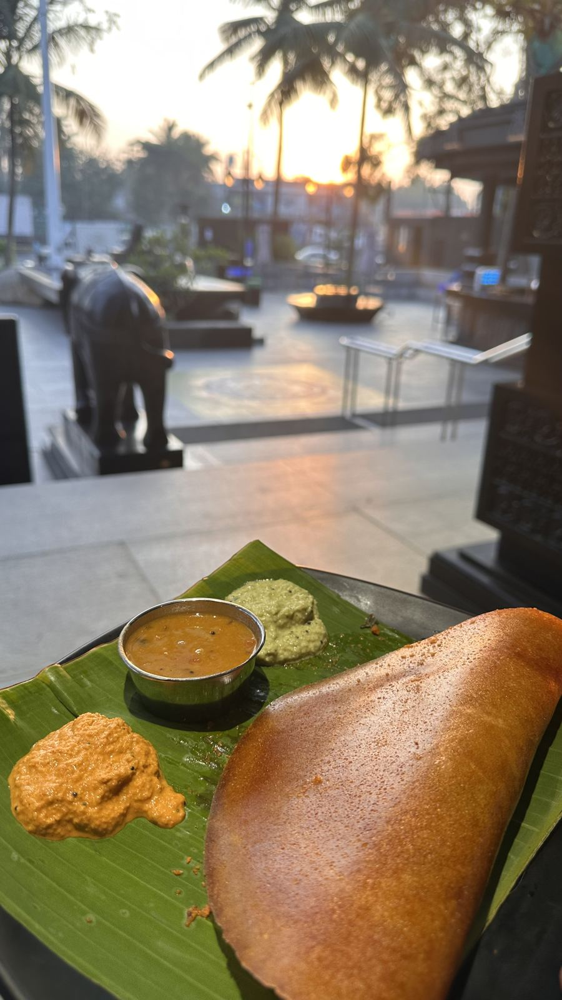

Messy problems in.
Clear, kind products out.
Designer who thinks in flows, systems, and spaces — turning complex user problems into products people actually get. From migraine-safe VR to post-surgery recovery apps.
Designer by profession, interaction thinker by training, healthcare nerd by choice. 2+ years across web, mobile, MedTech, AR/VR, and AI-assisted product design — with an MSc in Interaction & Experience Design and a soft spot for problems everyone else calls "too complicated".
If something makes you curious, my inbox is open.
Stories I've researched,
designed & lovingly told.
Exploring VR for Relaxation During Migraine Episodes
A VR relaxation concept built for a user's lowest-capacity moment: near-dark by default, zero reading, one-action entry.
Turning discharge chaos into one calm daily checklist — MedCare
A recovery companion for cardiac patients and their caregivers through the first 30 days after stent surgery.
From an ordinary transaction to a clue you can carry — Alibi
A reflective finance product that turns statement data into monthly stories, spending clues, and next-month watchlists.
Use AI. Keep your mind. — Human Mode
Human Mode explores how people can use generative AI without losing ownership of their thinking — starting with your own idea before choosing how much AI help you actually need.
Currently designing the core experience and interaction system.
Beyond design — where the illustrations live.
The non-client corner of my practice: illustrations, doodles, 3D renders, and experiments made purely for the joy of it.
How I think.
Design for users at their lowest capacity — in pain, anxious, distracted — and the experience works for everyone. My migraine VR work made every ounce of friction visible; that lens never left.
A beautiful screen that breaks under edge cases is not good design. Map the journey, the states, and the interaction logic first — the UI becomes almost inevitable after that.
The wrong word in a health alert causes panic; the right one builds trust. I treat tone of voice as a design system component — with rules, states, and reviews.
Shopify sections, ISO 13485, headset comfort limits, a small team's content capacity — real constraints make design decisions sharper, not smaller. I design inside them, not around them.
Test it, watch it fail, fix it, test again. The best iterations in my work came from being confidently wrong in front of five users.
Migraine-safe VR, post-surgery recovery, UPI behaviour stories, post-screen interfaces — given enough time and the right questions, no problem is too tangled to design for.
A little about Ray.
Hi, I'm Reshma — Ray to most people — and I solve problems for a living. The fun kind: where "it's complicated" becomes "oh, I get it."
Designer by profession, interaction thinker by training, healthcare nerd by choice. I studied Interaction Design in Bangalore, took an MSc in Interaction & Experience Design at the University of Limerick (First Class Honours — thesis on VR for migraine relief), and I'm now deep in Medical Device Technology & Business at Griffith University, learning why regulated products are the ultimate design constraint.
My happy place is the intersection of care and craft: healthcare flows that calm people down, immersive experiences that respect the body, AI features that earn trust instead of demanding it. When I'm not pushing pixels, you'll find me at the water's edge, chasing a new trail, three hours deep in a playlist, hunting down FOOOODD worth photographing — or photographing everything else.
~ Reshma "Ray" Shirin A
Life between pixels.
The best design ideas often come from stepping away. Whether I'm at the water's edge, trying a new restaurant, or deep in a playlist — those moments fuel the curiosity and empathy that shape my work. — shot on life, developed into design




hover to pause the reel
Where I've worked.
- Created high-quality 3D models, textures, and animations for diverse projects
- Conceptualised and developed UI designs with the design team
- Worked with developers to integrate designs into functional applications
- Ran multiple projects in parallel without dropping quality or deadlines
- Client work for Toyota, Amneal, Intel, and Etisalat Dubai
- User research via surveys and interviews; analysed data for pain points
- Wireframes and interactive prototypes in Sketch and Adobe XD
- Designed web app interfaces and ran usability testing sessions
- Worked on Project 1-G3C Tool, logo, brochure, and DICV Farm
- User flows and journey maps to expose key touchpoints and friction
- Heuristic evaluations and cognitive walkthroughs; pushed for accessible, inclusive experiences
- Wrote design specifications for development teams
Where I learned.
What I work with.
UX & Product
Wireframing · Interaction Design · User-Centered Design · Information Architecture · Journey Mapping · Design Systems · Pattern Libraries · Inclusive Design
UI & Visual
Visual Design · Typography · Color Theory · Responsive Web · Component Libraries · Material Design · UI Documentation
Research & Strategy
User Research · Interviews · Usability Testing · Heuristic Evaluation · Competitive Benchmarking · Stakeholder Workshops · Experience Mapping
Tools
Figma · Adobe XD · Sketch · Miro · Illustrator · Photoshop · After Effects · Premiere Pro
Emerging Tech
Virtual Reality · Augmented Reality · 3D Modelling · Unity 3D · Blender · Rhino 3D · Maya 3D · AI for UX & Product Design
Healthcare & MedTech
ISO 13485 · FDA Regulations · Medical Device Design Cycle · Connected Health · Healthcare UX Research · Medical Data Integrity
Let's design something
clear & kind.
Need someone to untangle your UX headaches? That's me. I'm open to UX/UI, Product Design, Interaction Design, Healthcare UX, MedTech UX, AR/VR UX, and AI-assisted product design roles. Let's chat — about your product, or about why calm interfaces will win the next decade.